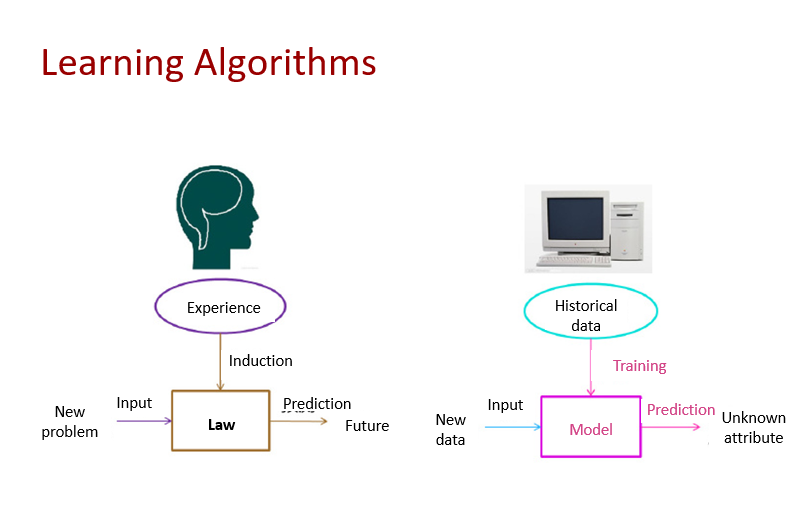
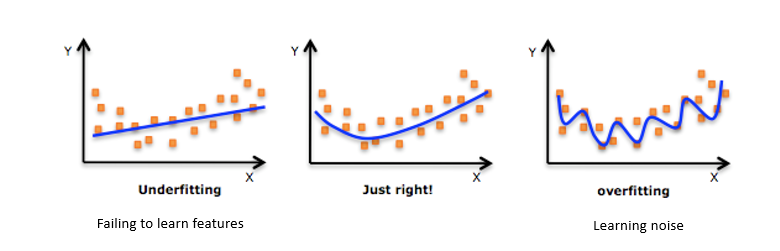

A Beginner's Guide For Machine Learning
What is machine learning?
Machine learning specializes in how computers simulate or implement
human learning behavior to acquire new knowledge or skills, and
reorganize existing knowledge structures to improve their performance
continuously. It is a subset of artificial intelligence. Any system
without learning ability can hardly be considered a real intelligent
system.
Learning System elements:
- Data
- Algorithm
- Computing power
- Scenario
Machine learning: Adaptive mechanism that enable computers to learn
from experience by: example and analogy.
Machine learning popular approach: artificial neural network "ANN".

Basic Terms and Concepts (1)
-
Dataset: refers to a set of data used in machine
learning tasks. Each piece of data is called a sample. The event or
attribute that reflects the performance or nature of a sample in a
certain aspect is called a feature.
-
Training set: refers to a dataset used in the training
process, where each sample is referred to as a training sample. The
process of learning a model from data is called learning (training).
-
Test set: Test refers to the process of using the
learnt model for prediction. The dataset used is called a test set,
and each sample is called a test sample.
Basic Terms and Concepts (2)
-
Generalization capability: The goal of machine learning
is that the learnt model should perform well on new samples, not
just those on which the model has been trained. The ability to
perform well on new samples is called generalization capability.
-
Error: refers to the difference between the sample
result predicted by the learnt model and the actual sample result.
- Training error: error of the model on the training set
-
Generalization error: error on the new sample. Obviously, we
prefer a model with a smaller generalization error.
-
Underfitting: occurs when the training error is too
large.
-
Overfitting: occurs when the training error of the
learnt model is small but the generalization error is large (weak
generalization capability).

Basic Terms and Concepts (3)
Many kinds of tasks can be solved with machine learning. The following
describes the most typical and common types:
-
Classification: The computer program is asked to
specify which of k categories some input belongs to, For example,
the image classification algorithm in computer vision is to solve a
classification task.
-
Regression: In this type of task, the computer program
is asked to predict a numerical value given some input, An example
of a regression task is the prediction of the expected claim amount
that an insured person will make (used to set insurance premiums),
or the prediction of future prices of securities.
Classification and regression are two major types of prediction tasks.
The outputs of classification are discrete type values while the
outputs of regression are consecutive values.
How Machine Learning Work?
-
A Decision Process: In general, machine learning
algorithms are used to make a prediction or classification. Based on
some input data, which can be labelled or unlabeled, your algorithm
will produce an estimate about a pattern in the data.
-
An Error Function: An error function serves to evaluate
the prediction of the model. If there are known examples, an error
function can make a comparison to assess the accuracy of the model.
-
An Model Optimization Process: If the model can fit
better to the data points in the training set, then weights are
adjusted to reduce the discrepancy between the known example and the
model estimate. The algorithm will repeat this evaluate and optimize
process, updating weights autonomously until a threshold of accuracy
has been met.
Machine learning Methods
- Supervised machine learning
Based on the samples of known classes, obtain an optimal model with
required performance through training and learning. Then, the model
is used to map all inputs to outputs and perform simple judgment on
outputs (classification). This model classifies unknown data. “image
and speech recognition, forecasting, classification (predict a
label), regression (predict a quantity)”
- Unsupervised machine learning
Unsupervised learning, uses machine learning algorithms to analyze
and cluster unlabeled datasets. These algorithms discover hidden
patterns or data groupings without the need for human intervention.
Its ability to discover similarities and differences in information
make it the ideal solution for exploratory data analysis,
cross-selling strategies, customer segmentation, image and pattern
recognition. It’s also used to reduce the number of features in a
model through the process of dimensionality reduction; principal
component analysis (PCA) and singular value decomposition (SVD) are
two common approaches for this. Other algorithms used in
unsupervised learning include neural networks, k-means clustering,
probabilistic clustering methods, and more.
- Semi-supervised learning
Semi-supervised learning offers a happy medium between supervised
and unsupervised learning. During training, it uses a smaller
labeled data set to guide classification and feature extraction from
a larger, unlabeled data set. Semi-supervised learning can solve the
problem of having not enough labeled data (or not being able to
afford to label enough data) to train a supervised learning
algorithm.
-
Reinforcement learning:
Learning systems learn mappings from environments to actions to
maximize the value of the reward signal (reinforcement signal)
function. The difference between reinforcement learning and
supervised learning is the teacher signal. The reinforcement signal
provided by the environment in reinforcement learning is an
assessment on the action (scalar signal) rather than telling the
learning system how to perform correct actions. “ have rules, win a
game with strategy”